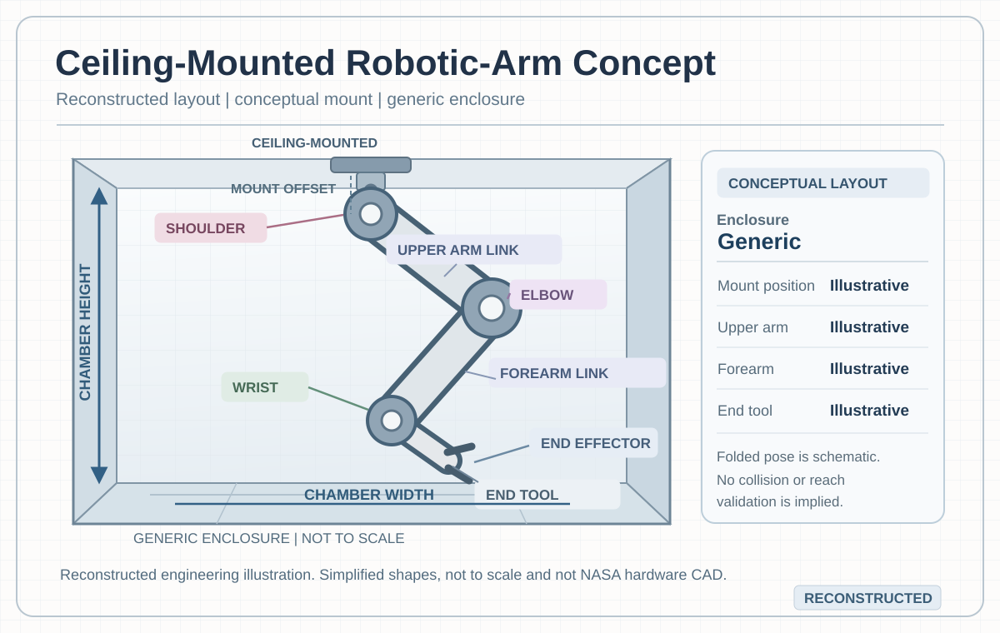
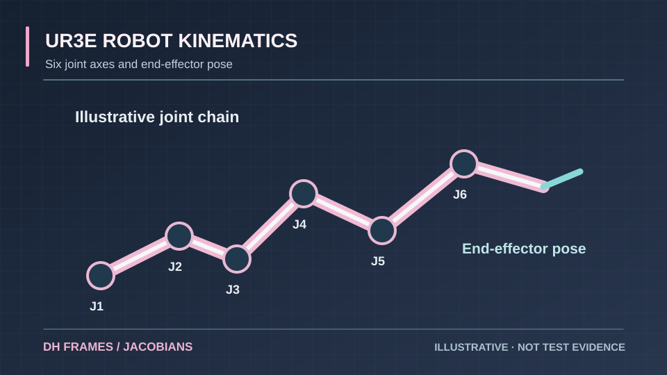
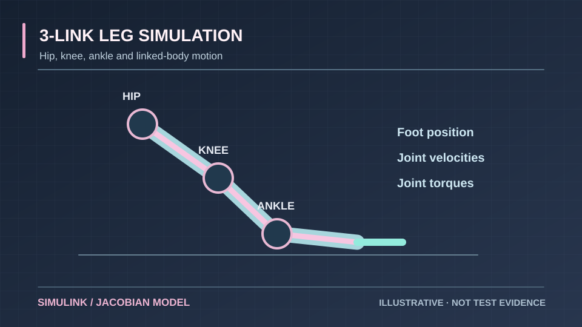
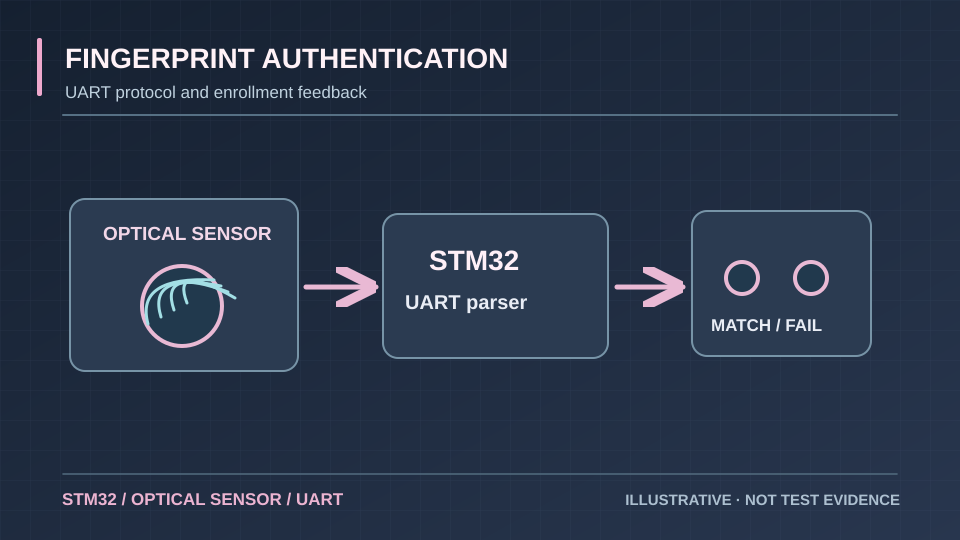
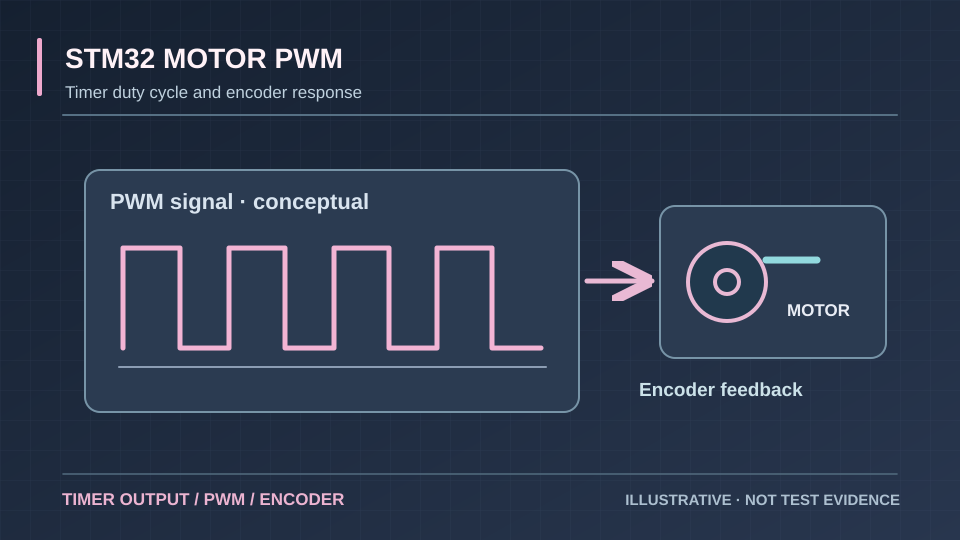
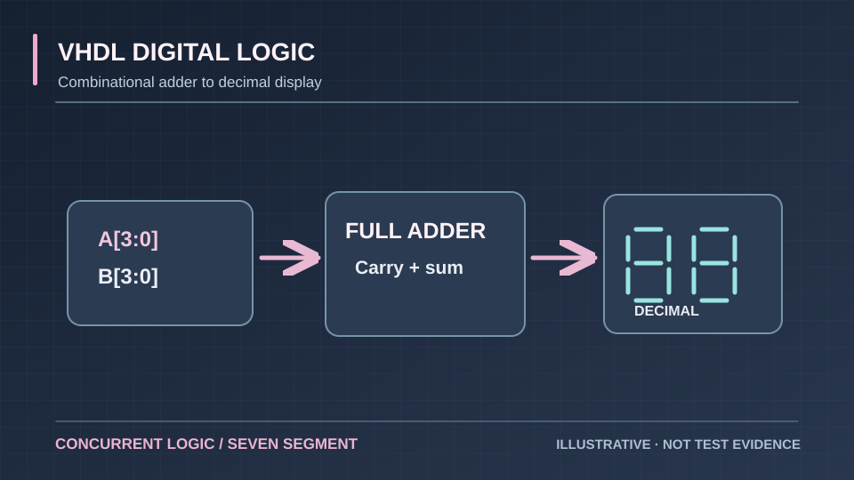
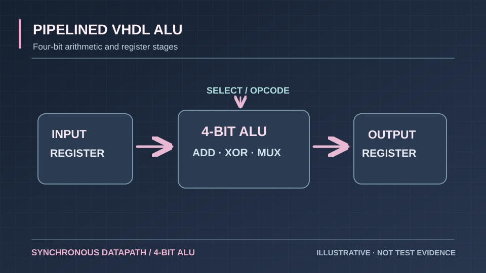
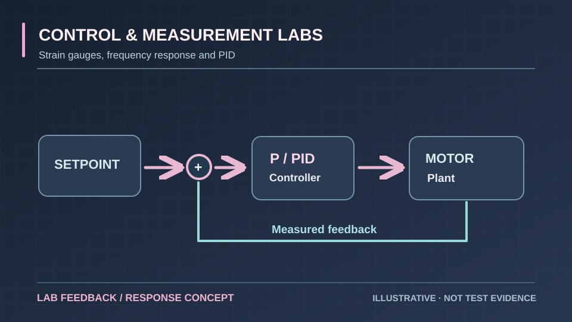
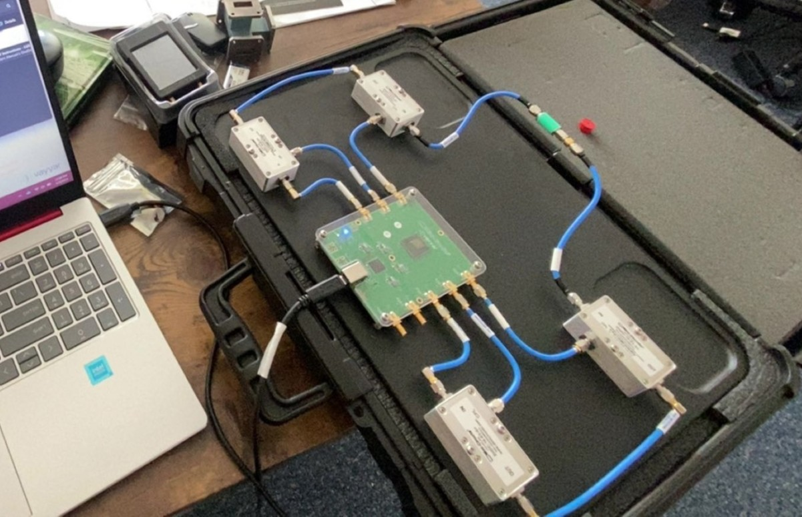

ENGINEERING PROJECT DIRECTORY
Sixteen projects.
Sixteen engineering projects organized by technical discipline.
Browse by discipline, search for a technique, or compare the evidence labels on each project. Open any case study for your role, methods, findings, and what remains unverified. Try the interactive engineering workbench ↗
Showing 16 engineering projects
No matching projects.
Robotics & kinematics
Motion models and joint geometry

GENERIC SCHEMATICNASA Marshall · OSTEM · 2026 · Independent assessmentNASA Robotic-Arm AssessmentHigh-vacuum feasibility, actuator loading, controls and verificationEvidence34 system requirements; estimated 3.1 N·m shoulder moment, excluding additional massesProject detail 01 ↗
SCHEMATICME422 · Spring 2026 · Group studyUR3e Robot KinematicsModeling six degrees of freedom with JacobiansEvidenceGroup analysis: a singular rank-5 poseProject detail 02 ↗
SCHEMATICGitHub · Robotics & controls3-Link Leg SimulationExploring how connected joints move togetherEvidenceSimulation: joint motion and torqueProject detail 03 ↗Embedded systems & digital design
Microcontrollers, firmware and digital logic

SCHEMATIC2025 · Embedded systemsFingerprint AuthenticationA small system with meaningful communication challengesEvidenceGroup demo: 24 templates across four usersProject detail 04 ↗
SCHEMATICFall 2025 · Embedded control courseworkSTM32 Motor Timing & PWMFrom timer registers to measured motor behaviorEvidenceLab observation: motor and peripheral timingProject detail 05 ↗
SCHEMATICEE421 · 2025 · Digital electronicsVHDL Digital LogicBinary arithmetic displayed in decimal without a clockEvidenceRTL implementation: four-bit arithmeticProject detail 06 ↗
SCHEMATICEE421 · October 2025 · Digital designPipelined VHDL ALUA clocked four-bit arithmetic and logic unitEvidenceRTL implementation: synchronous four-bit ALUProject detail 07 ↗Measurement, sensors & verification
Experimental methods, acquisition and engineering evidence

SCHEMATICEE370L · Spring 2025 · Partner laboratory workControl & Measurement LabsStrain gauges, frequency response, and P/PID motor controlEvidenceLab observation: vibration near 49.3 HzProject detail 08 ↗ RECONSTRUCTEDCapstone · 2026 · Health technologyIVerifyA non-invasive IV occlusion detection conceptEvidenceBench prototype: two-LED indicationProject detail 09 ↗
RECONSTRUCTEDCapstone · 2026 · Health technologyIVerifyA non-invasive IV occlusion detection conceptEvidenceBench prototype: two-LED indicationProject detail 09 ↗
 ILLUSTRATIVE2025–2026 · Test automationThermal Controller & LoggerMaking temperature measurements easier to trustEvidenceSource review: eight logging channelsProject detail 10 ↗
ILLUSTRATIVE2025–2026 · Test automationThermal Controller & LoggerMaking temperature measurements easier to trustEvidenceSource review: eight logging channelsProject detail 10 ↗

INSTRUMENT PHOTO2025 · RF measurementsVirtual Network AnalyzerTurning RF measurements into readable engineering dataEvidenceWorkflow documented; plotted traces syntheticProject detail 11 ↗ SCHEMATICEE421 · December 2025 · Semiconductor labHall-Effect Wafer MeasurementsCharacterizing charge carriers in a semiconductor waferEvidenceData audit: reported uncertainties dominateProject detail 12 ↗
SCHEMATICEE421 · December 2025 · Semiconductor labHall-Effect Wafer MeasurementsCharacterizing charge carriers in a semiconductor waferEvidenceData audit: reported uncertainties dominateProject detail 12 ↗
Software, simulation & interfaces
Engineering models, interaction and automation
 MODEL DATAGitHub · Electrical simulationProDriver SimPutting LED-driver behavior into a modelEvidenceCalculation: 26.82 W and 35.76 W outputsProject detail 13 ↗
MODEL DATAGitHub · Electrical simulationProDriver SimPutting LED-driver behavior into a modelEvidenceCalculation: 26.82 W and 35.76 W outputsProject detail 13 ↗
 SYSTEM DIAGRAMGitHub · Human interactionHueMotionTurning hand gestures into lighting responsesEvidenceCode audit: eight scenes; 11 offline testsProject detail 14 ↗
SYSTEM DIAGRAMGitHub · Human interactionHueMotionTurning hand gestures into lighting responsesEvidenceCode audit: eight scenes; 11 offline testsProject detail 14 ↗
 SYSTEM DIAGRAMGitHub · Lighting controlDMX ControllerA browser interface connected to physical lightsEvidenceCalculated minimum DMX frame: 22.708 msProject detail 15 ↗
SYSTEM DIAGRAMGitHub · Lighting controlDMX ControllerA browser interface connected to physical lightsEvidenceCalculated minimum DMX frame: 22.708 msProject detail 15 ↗
 WORKFLOWCS646 · Fall 2026 · Operating systems courseworkPowerShell Systems & ConcurrencyInventory, safe CSV processing, and synchronized parallel tasksEvidenceHistorical results: serial vs parallel timingProject detail 16 ↗
WORKFLOWCS646 · Fall 2026 · Operating systems courseworkPowerShell Systems & ConcurrencyInventory, safe CSV processing, and synchronized parallel tasksEvidenceHistorical results: serial vs parallel timingProject detail 16 ↗